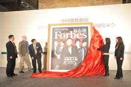

论坛现场
2010福布斯中国名人榜新闻发布会现场一
2010福布斯中国名人榜新闻发布会现场二
揭榜仪式

本场嘉宾：
周健工 《福布斯》中文版总编辑
范鲁贤 福布斯上海分社社长
任志强 华远地产股份有限公司董事长
张 颖 《福布斯》中文版总经理
杨琳然 《福布斯》中文版编辑
周健工 《福布斯》中文版总编辑
范鲁贤 福布斯上海分社社长
任志强 华远地产股份有限公司董事长
张 颖 《福布斯》中文版总经理
杨琳然 《福布斯》中文版编辑
周健工
《福布斯》中文版总编辑
《福布斯》中文版总编辑
范鲁贤
福布斯上海分社社长
福布斯上海分社社长
任志强
华远地产股份有限公司董事长
华远地产股份有限公司董事长
张 颖
《福布斯》中文版总经理
《福布斯》中文版总经理
杨琳然
《福布斯》中文版编辑
《福布斯》中文版编辑
圆桌对话一：解构偶像经济

本场嘉宾：
杨琳然 《福布斯》中文版编辑
崔震东 索尼大中华区总裁
陶 雷 奥美广告中国区总裁
徐 岩 英皇娱乐中国区总裁
宋 柯 太合麦田首席执行官
陆 浩 众辉国际总经理
杨琳然 《福布斯》中文版编辑
崔震东 索尼大中华区总裁
陶 雷 奥美广告中国区总裁
徐 岩 英皇娱乐中国区总裁
宋 柯 太合麦田首席执行官
陆 浩 众辉国际总经理


杨琳然
《福布斯》中文版编辑
《福布斯》中文版编辑
崔震东
索尼大中华区总裁
索尼大中华区总裁
陶 雷
奥美广告中国区总裁
奥美广告中国区总裁
徐 岩
英皇娱乐中国区总裁
英皇娱乐中国区总裁
宋 柯
太合麦田首席执行官
太合麦田首席执行官
陆 浩
众辉国际总经理
众辉国际总经理
圆桌对话二：娱乐文化产业投资现状与机会

本场嘉宾：
周健工 《福布斯》中文版总编辑
张 昭 光线影视有限公司总裁
康 宝 小马奔腾执行总裁
卓顺国 乐视娱乐投资有限公司总裁兼总经理
蒋国兴 浙报传媒控股集团有限公司副总经理、东方星空文化基金总经理
朱晓东 国际足联驻华商务代表、北京欧迅体育公司董事长
周健工 《福布斯》中文版总编辑
张 昭 光线影视有限公司总裁
康 宝 小马奔腾执行总裁
卓顺国 乐视娱乐投资有限公司总裁兼总经理
蒋国兴 浙报传媒控股集团有限公司副总经理、东方星空文化基金总经理
朱晓东 国际足联驻华商务代表、北京欧迅体育公司董事长


周健工
《福布斯》中文版总编辑
《福布斯》中文版总编辑
张 昭
光线影视有限公司总裁
光线影视有限公司总裁
康 宝
小马奔腾执行总裁
小马奔腾执行总裁
卓顺国
乐视娱乐投资有限公司总裁兼总经理
乐视娱乐投资有限公司总裁兼总经理
蒋国兴
浙报传媒控股集团有限公司副总经理、东方星空文化基金总经理
浙报传媒控股集团有限公司副总经理、东方星空文化基金总经理
朱晓东
国际足联驻华商务代表、北京欧迅体育公司董事长
国际足联驻华商务代表、北京欧迅体育公司董事长